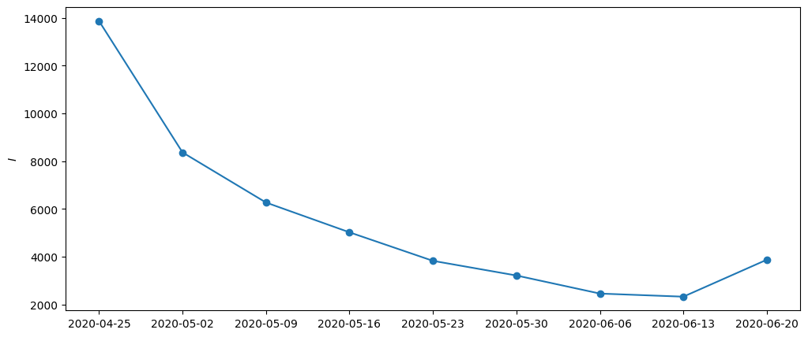

from ssm4epi.models.regional_growth_factor import (
key,
n_iterations,
N_mle,
N_meis,
N_posterior,
percentiles_of_interest,
make_aux,
dates_full,
cases_full,
n_ij,
n_tot,
n_pop,
account_for_nans,
growth_factor_model,
)
import jax.numpy as jnp
import jax
import jax.random as jrn
from isssm.importance_sampling import prediction
from isssm.laplace_approximation import laplace_approximation as LA
from isssm.modified_efficient_importance_sampling import (
modified_efficient_importance_sampling as MEIS,
)
from pyprojroot.here import here
jax.config.update("jax_enable_x64", True)
from isssm.estimation import initial_theta
import pickle
import matplotlib.pyplot as pltApplication 1: Showcase
from datetime import date
import pandas as pd
initial_date = "2020-04-18"
np1 = 10
(dates_index,) = jnp.where(dates_full == initial_date)[0]
dates = dates_full[dates_index + 1 : dates_index + np1 + 1]
aux = make_aux(initial_date, cases_full, n_ij, n_tot, np1)
y = aux[0][1:]
y_nan = y.at[-1].set(jnp.nan)
missing_inds = jnp.isnan(y_nan)
# original result from 10_model.ipynb
theta_manual = jnp.array(
[-0.0236392, -2.0838978, -5.31651543, -2.62109273, -0.3461143, 0.57673125]
)
_, y_miss = account_for_nans(
growth_factor_model(theta_manual, aux), y_nan, missing_inds
)
_model_miss = lambda theta, aux: account_for_nans(
growth_factor_model(theta, aux), y_nan, missing_inds
)[0]plt.figure(figsize=(12, 5))
plt.ylabel("$I$")
plt.plot(dates, y_nan.sum(axis=-1))
plt.scatter(dates, y_nan.sum(axis=-1))
plt.show()
theta0_result = initial_theta(
y_miss,
_model_miss,
theta_manual,
aux,
n_iter_la=n_iterations,
options={"maxiter": 10},
)
theta0 = theta0_result.xfrom ssm4epi.models.regional_growth_factor import theta_to_par
import jax.scipy as jsp
jsp.special.expit(theta0[0]) * 2 - 1Array(-0.01538746, dtype=float64)from isssm.laplace_approximation import laplace_approximation
from isssm.estimation import pgnll
from scipy.optimize import minimize as minimize_scipy
from jaxtyping import Float, Array
from jax import jit
def mle_pgssm(
y: Float[Array, "n+1 p"], # observations $y_t$
model_fn, # parameterized LCSSM
theta0: Float[Array, "k"], # initial parameter guess
aux, # auxiliary data for the model
n_iter_la: int, # number of LA iterations
N: int, # number of importance samples
key: Array, # random key
options=None, # options for the optimizer
) -> Float[Array, "k"]: # MLE
"""Maximum Likelihood Estimation for PGSSMs"""
@jit
def f(theta, key):
model = model_fn(theta, aux)
proposal_la, _ = laplace_approximation(y, model, n_iter_la)
key, subkey = jrn.split(key)
# improve numerical stability by dividing by number of observations
n_obs = y.size
return pgnll(y, model, proposal_la.z, proposal_la.Omega, N, subkey) / n_obs
key, subkey = jrn.split(key)
result = minimize_scipy(
f, theta0, method="BFGS", jac="3-point", options=options, args=(subkey,)
)
return result
theta_result = mle_pgssm(
y_miss,
_model_miss,
theta0,
aux,
n_iter_la=n_iterations,
N=10000,
key=key,
options={"maxiter": 100},
)
theta = theta_result.x
theta_result message: Optimization terminated successfully.
success: True
status: 0
fun: 2.5437482153776516
x: [-4.432e-01 -3.458e+00 -2.887e-01 -2.959e+00 3.409e-01
2.971e+00]
nit: 56
jac: [-5.860e-06 2.659e-06 4.936e-06 1.273e-06 4.085e-06
-1.754e-06]
hess_inv: [[ 1.907e+01 4.070e+00 ... -1.014e+01 1.162e+01]
[ 4.070e+00 1.223e+03 ... 8.433e-02 4.541e+01]
...
[-1.014e+01 8.433e-02 ... 6.092e+01 3.498e+01]
[ 1.162e+01 4.541e+01 ... 3.498e+01 4.599e+02]]
nfev: 858
njev: 66fitted_model = _model_miss(theta, aux)
proposal_la, info_la = LA(y_miss, fitted_model, n_iterations)
def f_pred(x, s, y):
y_county = y[-1]
y_tot = jnp.minimum(y_county, n_pop).sum()[None]
growth_factor = x[:, 0]
growth_factors_county = s.reshape(-1)
return jnp.concatenate([y_tot, y_county, growth_factors_county, growth_factor])
key, subkey = jrn.split(key)preds = prediction(
f_pred,
y_miss,
proposal_la,
fitted_model,
100,
subkey,
percentiles_of_interest,
growth_factor_model(theta, aux),
)
result = (theta, proposal_la, preds, dates, y)
with open(here() / "data/results/4_local_outbreak_model/results.pickle", "wb") as f:
pickle.dump(result, f)preds[2][:, 0]Array([2261.5304789 , 2842.37185041, 3605.15148285, 3605.47859834,
3605.80571384, 3606.13282933, 3606.45994483, 3606.78706032,
3607.11417581, 3607.44129131, 3607.7684068 , 4148.85810806,
4720.33087078, 4720.8185383 , 4721.30620582, 4721.79387334,
4722.28154086, 4722.76920838, 4723.2568759 , 4723.74454342,
5012.9002042 , 5277.68991699, 5281.09104275], dtype=float64)with open(here() / "data/results/4_local_outbreak_model/results.pickle", "rb") as f:
result = pickle.load(f)theta, proposal, preds, dates, y = resultfrom ssm4epi.models.regional_growth_factor import _P
import jax.scipy as jsp
logit_alpha, log_s2_r, log_s2_spat, logit_q, log_Cm1, log_r = theta
params_ser = pd.Series(
{
"alpha": jsp.special.expit(logit_alpha) * 2 - 1,
"sigma_r": jnp.sqrt(jnp.exp(log_s2_r)),
"sigma spatial": jnp.sqrt(jnp.exp(log_s2_spat)),
"q": jsp.special.expit(logit_q),
"C": jnp.exp(log_Cm1) + 1,
"r": jnp.exp(log_r),
}
)
params_ser.to_csv(
here() / "data/results/4_local_outbreak_model/estimated_parameters.csv",
header=False,
)
params_ser.apply(lambda x: f"{x:.2f}")alpha -0.22
sigma_r 0.18
sigma spatial 0.87
q 0.05
C 2.41
r 19.52
dtype: objectimport numpy as np
P = _P(params_ser.C, params_ser.q, n_ij, n_tot)
np.savetxt(
here() / "data/results/4_local_outbreak_model/showcase_P_matrix.csv", np.array(P)
)import pandas as pd
df = pd.DataFrame(
{
"variable": [
"y_total",
*[f"y_total_{c}" for c in range(1, 401)],
*[f"log_rho_{c}_{t}" for t in range(1, 11) for c in range(1, 401)],
*["log_rho" for t in range(1, 11)],
],
"c": [
0,
*range(1, 401),
*[c for t in range(1, 11) for c in range(1, 401)],
*[0 for _ in range(1, 11)],
],
"t": [
10,
*jnp.repeat(10, 400),
*[t for t in range(1, 11) for c in range(1, 401)],
*[t for t in range(1, 11)],
],
"mean": preds[0],
"sd": preds[1],
**{
f"{p * 100:.1f} %": preds[2][i, :]
for i, p in enumerate(percentiles_of_interest)
},
}
)
df["date"] = [dates[t - 1] for t in df["t"]]
df.to_csv(here("data/results/4_local_outbreak_model/showcase.csv"), index=False)